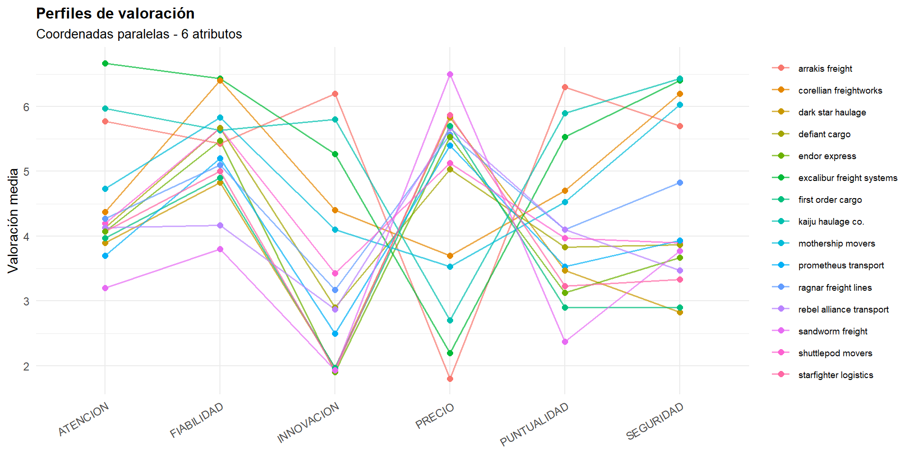
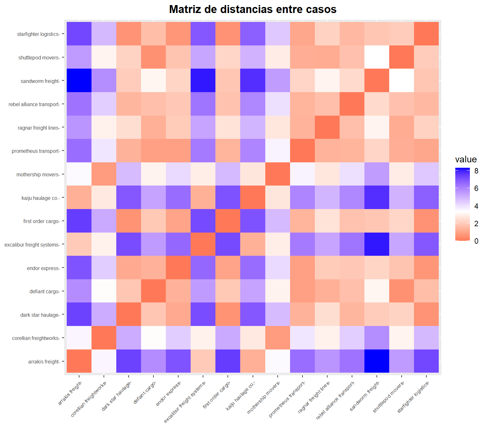
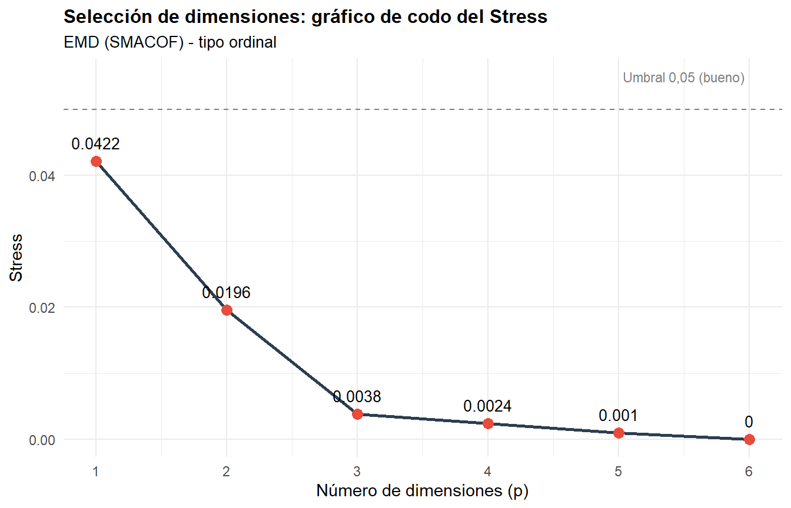
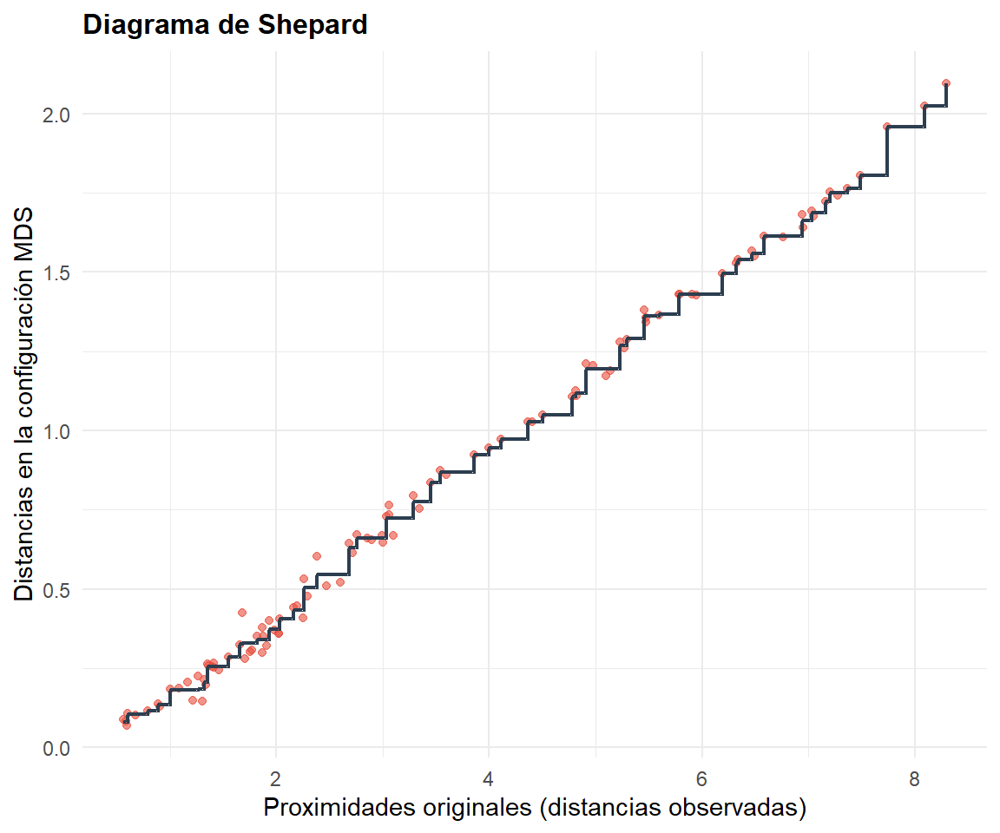
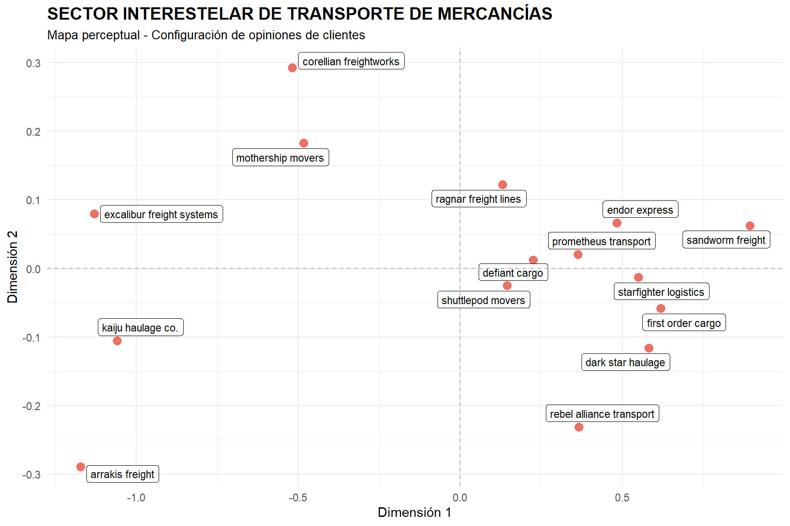
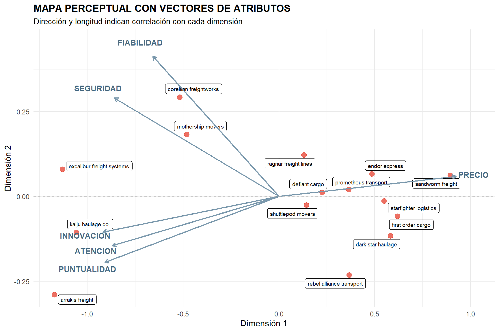
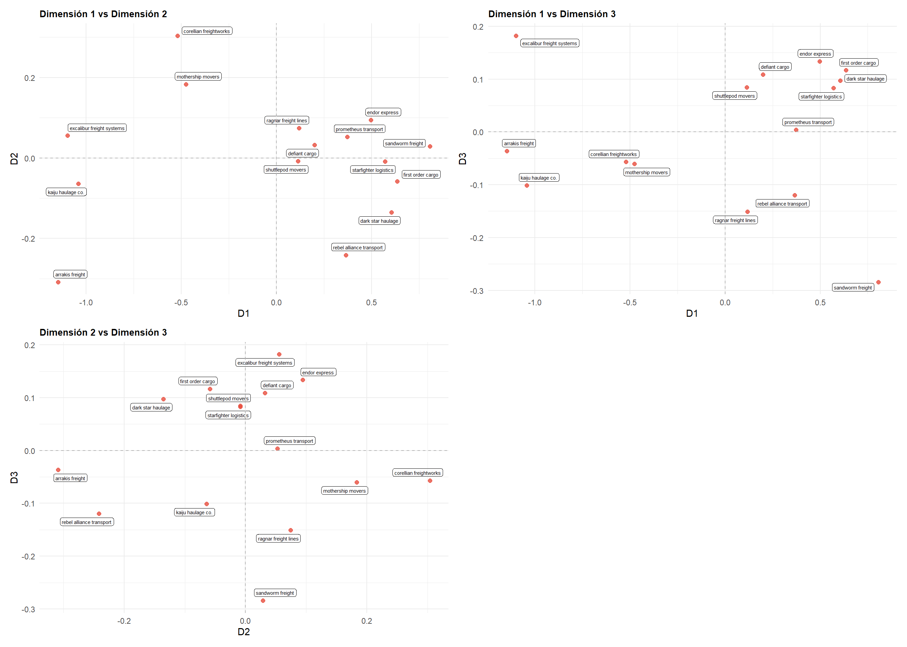

8 Escalado multidimensional.
Figura 8.1. ¿Cómo nos ven? El mapa de las percepciones.
8.1  Introducción: los mapas perceptuales.
Introducción: los mapas perceptuales.
En capítulos anteriores hemos utilizado diversas técnicas para describir, clasificar o explicar el comportamiento de un conjunto de variables. Todas ellas comparten un rasgo: parten de datos objetivos —cifras de ventas, ratios financieros, índices de satisfacción— y aplican procedimientos estadísticos para extraer conclusiones. Sin embargo, en el ámbito de la estrategia empresarial y el marketing, existe una pregunta que los datos objetivos, por sí solos, no responden: ¿cómo perciben los clientes nuestro servicio en relación con los de la competencia?
Esta pregunta es esencialmente subjetiva, y para abordarla necesitamos una herramienta capaz de traducir las percepciones humanas en una representación visual interpretable. Esa herramienta es el mapa perceptual.
Un mapa perceptual es una representación gráfica de las percepciones que tienen los clientes (o cualquier grupo de evaluadores) sobre las relaciones entre un conjunto de casos —productos, servicios, marcas, empresas— en un espacio de pocas dimensiones (habitualmente dos). Su objetivo es revelar las estructuras ocultas que subyacen en los datos de percepción: qué casos se consideran similares, cuáles se perciben como diferentes, y qué ejes o dimensiones latentes organizan esas percepciones en la mente de los encuestados.
Los mapas perceptuales permiten responder a interrogantes fundamentales para la toma de decisiones empresariales:
¿Quiénes son nuestros competidores más directos, desde el punto de vista del cliente?
¿Cuál es nuestra posición en el mercado respecto a la competencia?
¿Cómo podemos reposicionar nuestra marca o servicio?
¿A qué segmento debemos dirigir nuestros esfuerzos?
¿Cuáles son nuestras fortalezas y debilidades percibidas?
¿Existe algún nicho de mercado no cubierto?
Para construir estos mapas a partir de datos de percepción, se han desarrollado diversas técnicas estadísticas, entre las cuales destaca la familia de métodos conocida como Escalado Multidimensional (EMD).
8.2 Escalado Multidimensional: concepto y tipos.
El Escalado Multidimensional (Multidimensional Scaling, MDS) es una técnica que permite descubrir estructuras o patrones dentro de una matriz de proximidades entre casos. Su objetivo es doble:
Determinar la dimensión del modelo (el número de ejes) que proporcione un ajuste satisfactorio.
Obtener las coordenadas de los casos en esas dimensiones, de manera que las distancias entre los puntos en el mapa reflejen fielmente las proximidades percibidas: cuanto más cercanos sean dos puntos, más similares serán las opiniones de los encuestados sobre esos dos casos.
Una ventaja importante del EMD frente a otras técnicas multivariantes es que los resultados no dependen de los juicios del investigador sobre qué variables o características incluir: las dimensiones que emergen del análisis proceden directamente de los juicios globales de los encuestados sobre la similitud entre los casos.
Dicho esto, en la práctica aplicada es frecuente que los datos de partida no sean juicios directos de similitud, sino valoraciones de los casos en un conjunto de atributos (por ejemplo, mediante escalas Likert). En estos casos, la matriz de proximidades se deriva de los datos de valoración, como veremos más adelante.
8.2.1 Proximidades y distancias.
El concepto central del EMD es la proximidad entre dos casos: un valor que indica cuán similares o diferentes los perciben los encuestados. Cuando se habla de proximidad en este contexto, nos referimos a una «distancia perceptual» entre los casos.
El procedimiento más directo para obtener datos de proximidad es preguntar a las personas acerca del parecido que perciben entre cada par de casos. Sin embargo, este enfoque resulta costoso cuando el número de casos es elevado (con \(n\) casos hay \(n(n-1)/2\) pares distintos), y en la práctica se recurre con frecuencia a un procedimiento indirecto: pedir a los encuestados que valoren cada caso en una serie de atributos mediante una escala tipo Likert, y calcular después la distancia entre los perfiles de valoración.
Formalmente, la matriz de proximidades \(\Delta\) recoge las distancias \(\delta_{ij}\) entre todos los pares de casos \(i\) y \(j\). Esta matriz es simétrica (\(\delta_{ij} = \delta_{ji}\)) y tiene ceros en la diagonal (\(\delta_{ii} = 0\)). El objetivo del EMD es encontrar, a partir de \(\Delta\), una matriz de coordenadas \(X\), de \(n\) filas (casos) y \(p\) columnas (dimensiones), que represente cada caso como un punto en un espacio de \(p\) dimensiones, de modo que las distancias entre los puntos sean lo más coherentes posible con las proximidades originales.
8.2.2 EMD métrico y no métrico.
La diferencia entre ambos tipos radica en el nivel de exigencia con que se pide que las distancias en el mapa reproduzcan las proximidades originales:
EMD métrico (clásico): exige que las distancias en el mapa sean proporcionales a las proximidades originales. Es decir, si la distancia entre A y B es el doble que la distancia entre C y D en los datos, también debe serlo en el mapa.
EMD no métrico (ordinal): exige únicamente que las distancias en el mapa preserven el orden de las proximidades originales. Si A y B están más cerca que C y D en los datos, también deben estarlo en el mapa, pero no importa cuánto más cerca.
El EMD no métrico es el más utilizado en Ciencias Sociales y en investigación de mercados, porque los datos de encuesta (escalas Likert, valoraciones ordinales) no tienen un significado métrico estricto: la diferencia entre un 4 y un 5 en una escala de satisfacción no es necesariamente la misma que la diferencia entre un 6 y un 7. En este capítulo nos centraremos en el EMD no métrico.
8.3 El algoritmo SMACOF y el Stress.
8.3.1 SMACOF.
Para pasar de la matriz de proximidades a la matriz de coordenadas, se han desarrollado diversos algoritmos. Uno de los más utilizados en EMD no métrico es SMACOF (Scaling by Majorizing a Complicated Function), implementado en el paquete {smacof} de R, que es el que utilizan internamente las funciones de MATlite.
SMACOF busca iterativamente las coordenadas de los casos que minimizan una medida de desajuste denominada Stress. El proceso es conceptualmente sencillo: parte de una configuración inicial y la va refinando en sucesivas iteraciones hasta que el Stress deja de mejorar apreciablemente.
8.3.2 El Stress como medida de bondad del ajuste.
El Stress cuantifica la discrepancia entre las proximidades originales y las distancias obtenidas en la configuración. Su valor oscila entre 0 (ajuste perfecto) y valores positivos que indican grados crecientes de desajuste. Kruskal (1964) propuso la siguiente escala orientativa para interpretarlo:
| Stress | Calidad de la representación |
|---|---|
| \(> 0{,}20\) | Pobre |
| \(0{,}10 - 0{,}20\) | Razonable |
| \(0{,}05 - 0{,}10\) | Buena |
| \(0{,}025 - 0{,}05\) | Excelente |
| \(0 - 0{,}025\) | Perfecta |
Tabla 8.1
La elección del número de dimensiones \(p\) se basa en un equilibrio entre parsimonia (pocas dimensiones, fáciles de interpretar) y calidad del ajuste (Stress bajo). La herramienta visual para esta decisión es el gráfico de codo del Stress: se representan los valores obtenidos para \(p = 1, 2, 3, \ldots\) y se busca el punto a partir del cual añadir una dimensión más produce una mejora reducida.
8.3.3 El diagrama de Shepard.
Además del Stress, disponemos de una herramienta visual para evaluar la calidad del ajuste: el diagrama de Shepard. Este gráfico enfrenta en el eje horizontal las proximidades originales y en el eje vertical las distancias obtenidas en la configuración. Si el ajuste es bueno, los puntos se alinearán sobre una función monótona creciente (en el caso no métrico). Los puntos muy alejados de la tendencia general señalan pares de casos cuya distancia en el mapa no se corresponde con su proximidad original.
8.4  Práctica: el mapa perceptual del sector interestelar.
Práctica: el mapa perceptual del sector interestelar.
8.4.1  La imagen del sector.
La imagen del sector.
La Asociación Sectorial de Transporte Interestelar (ASTI) ha detectado una tendencia preocupante entre las pequeñas y medianas empresas que contratan servicios de transporte de mercancías: muchos clientes consideran que «todas las compañías navieras son iguales» y eligen transportista basándose casi exclusivamente en el precio. Esto está erosionando los márgenes de todo el sector y dificultando que las compañías con mejor servicio puedan diferenciarse.
Para combatir esta dinámica, la ASTI ha encargado a la consultora Data-Evidence un estudio que responda a dos preguntas clave: ¿cómo perciben realmente los clientes a las distintas compañías del sector? y ¿existen dimensiones latentes de diferenciación que el sector no está comunicando adecuadamente?
El equipo de Data-Evidence diseña un cuestionario con seis atributos clave del servicio de transporte de mercancías —fiabilidad, puntualidad, seguridad de la carga, relación calidad-precio, atención al cliente e innovación tecnológica— y recoge las valoraciones de 30 clientes frecuentes sobre 15 de las principales compañías del sector, utilizando una escala Likert de 1 (muy deficiente) a 7 (excelente). Con estos datos, construirá un mapa perceptual mediante Escalado Multidimensional no métrico.
8.4.2 Preparación de los datos.
Necesitamos en la carpeta del proyecto el archivo de datos percepcion_interestelar.xlsx, cuya hoja “Datos” contiene las valoraciones medias de cada empresa en cada uno de los seis atributos, y el script emd_lite.R. Las 15 compañías pertenecen al universo de 300 empresas de la Base de Datos Interestelar, y presentan perfiles muy diversos: desde grandes corporaciones con flota renovada como Arrakis Freight o Excalibur Freight Systems, hasta compañías pequeñas con flota antigua como Sandworm Freight o First Order Cargo, pasando por empresas de tamaño medio con flota madura como Shuttlepod Movers o Defiant Cargo:
# Limpiando el Global Environment
rm(list = ls())
# Cargando el paquete de la asignatura
library(MATlite)
# Importando datos desde Excel
PERCEPCION <- lite_importa("percepcion_interestelar.xlsx")
lite_resumen(PERCEPCION)| PERCEPCION | ||||||
| 15 rows x 6 cols | ||||||
| Column | Plot Overview | Missing | Mean | Median | SD | |
|---|---|---|---|---|---|---|
| FIABILIDAD | 0.0% | 5.3 | 5.4 | 0.7 | ||
| PUNTUALIDAD | 0.0% | 4.1 | 4.0 | 1.1 | ||
| SEGURIDAD | 0.0% | 4.5 | 3.9 | 1.3 | ||
| PRECIO | 0.0% | 4.7 | 5.4 | 1.5 | ||
| ATENCION | 0.0% | 4.5 | 4.1 | 0.9 | ||
| INNOVACION | 0.0% | 3.4 | 2.9 | 1.5 | ||
Tabla 8.2
El data frame resultante tiene 15 filas (una por empresa) y 6 columnas (una por atributo), con los nombres de las empresas como nombres de fila. Las valoraciones oscilan entre 1 y 7, como corresponde a la escala Likert utilizada en la encuesta.
8.4.3 Exploración y número de dimensiones.
La función lite_emd_dimensiones() realiza toda la fase exploratoria: muestra los perfiles de valoración, calcula la matriz de proximidades (distancias euclídeas entre los perfiles de cada par de empresas) y estima el EMD no métrico con 1 a 6 dimensiones para ayudarnos a elegir cuántas utilizar. Si no indicamos el argumento variables, utiliza todas las columnas del data frame:
exploracion <- lite_emd_dimensiones(PERCEPCION)Antes de calcular proximidades, conviene examinar los perfiles de valoración de las compañías. La tabla de perfiles recoge los datos de partida:
exploracion$tabla_perfiles| FIABILIDAD | PUNTUALIDAD | SEGURIDAD | PRECIO | ATENCION | INNOVACION | |
|---|---|---|---|---|---|---|
| arrakis freight | 5.43 | 6.30 | 5.70 | 1.80 | 5.77 | 6.20 |
| excalibur freight systems | 6.43 | 5.53 | 6.40 | 2.20 | 6.67 | 5.27 |
| kaiju haulage co. | 5.63 | 5.90 | 6.43 | 2.70 | 5.97 | 5.80 |
| mothership movers | 5.83 | 4.53 | 6.03 | 3.53 | 4.73 | 4.10 |
| corellian freightworks | 6.40 | 4.70 | 6.20 | 3.70 | 4.37 | 4.40 |
| shuttlepod movers | 5.67 | 3.97 | 3.90 | 5.13 | 4.20 | 3.43 |
| defiant cargo | 5.67 | 3.83 | 3.87 | 5.03 | 4.13 | 2.90 |
| ragnar freight lines | 5.10 | 4.10 | 4.83 | 5.57 | 4.27 | 3.17 |
| rebel alliance transport | 4.17 | 4.10 | 3.47 | 5.67 | 4.13 | 2.87 |
| prometheus transport | 5.20 | 3.53 | 3.93 | 5.40 | 3.70 | 2.50 |
| dark star haulage | 4.83 | 3.47 | 2.83 | 5.83 | 3.90 | 1.97 |
| starfighter logistics | 5.00 | 3.23 | 3.33 | 5.87 | 4.07 | 1.93 |
| endor express | 5.47 | 3.13 | 3.67 | 5.53 | 4.07 | 1.90 |
| first order cargo | 4.90 | 2.90 | 2.90 | 5.70 | 3.97 | 1.97 |
| sandworm freight | 3.80 | 2.37 | 3.77 | 6.50 | 3.20 | 1.93 |
Tabla 8.3
Un gráfico de coordenadas paralelas permite visualizar simultáneamente los seis atributos para cada empresa, revelando patrones de similitud a simple vista:
exploracion$perfiles
Figura 8.2
El gráfico ya permite intuir la existencia de grupos de empresas con perfiles similares. Se aprecia, por ejemplo, que las compañías con flota renovada (Arrakis Freight, Excalibur Freight Systems, Kaiju Haulage Co.) comparten un perfil característico: valoraciones altas en atención, fiabilidad, innovación y seguridad, pero bajas en precio (son percibidas como caras). En el extremo opuesto, compañías como Sandworm Freight o First Order Cargo muestran el patrón inverso. Sin embargo, la maraña de líneas resulta difícil de interpretar con 15 compañías. Precisamente para eso sirve el mapa perceptual.
La matriz de proximidades contiene las \(15 \times 14 / 2 = 105\) distancias entre todos los pares de empresas, y se visualiza como un mapa de calor, donde los tonos anaranjados indican proximidad (empresas percibidas como similares) y los tonos azulados indican distancia:
exploracion$distancias
Figura 8.3
El mapa de calor revela patrones interesantes. Compañías como Shuttlepod Movers y Defiant Cargo presentan tonos anaranjados muy intensos entre sí, lo que indica que los clientes las perciben de manera muy similar. Lo mismo ocurre entre Starfighter Logistics y Endor Express. En el extremo opuesto, Sandworm Freight destaca por su fila y columna dominadas por tonos azulados: es la compañía más «peculiar» del grupo. También se aprecian bloques de color anaranjado entre las grandes empresas de flota renovada, confirmando que los clientes las perciben como un grupo homogéneo.
Pasamos a decidir cuántas dimensiones utilizar. Aunque nuestro objetivo final es un mapa bidimensional (el más fácil de interpretar), necesitamos verificar que dos dimensiones son suficientes. La pieza stress recoge el Stress de cada solución, con su calificación según la escala de Kruskal, y la pieza codo, el gráfico de codo:
exploracion$stress| Dimensiones | Stress | Calidad |
|---|---|---|
| 1 | 0.0422 | Excelente |
| 2 | 0.0196 | Perfecta |
| 3 | 0.0038 | Perfecta |
| 4 | 0.0024 | Perfecta |
| 5 | 0.0010 | Perfecta |
| 6 | 0.0000 | Perfecta |
Tabla 8.4
exploracion$codo
Figura 8.4
El Stress desciende marcadamente al pasar de una a dos dimensiones, y a partir de dos dimensiones la mejora es progresivamente menor. Con dos dimensiones, el Stress (0,0196) se sitúa ya en el rango de calidad perfecta de la escala de Kruskal, lo que confirma que dos dimensiones son suficientes para representar adecuadamente las proximidades perceptuales.
8.4.4 La solución en dos dimensiones.
Ajustamos el EMD no métrico con dos dimensiones mediante la función lite_emd(). El argumento ndim fija el número de dimensiones, y titulo y subtitulo rotulan los mapas:
mapa <- lite_emd(PERCEPCION, ndim = 2,
titulo = "SECTOR INTERESTELAR DE TRANSPORTE DE MERCANCÍAS",
subtitulo = "Mapa perceptual - Configuración de opiniones de clientes")La pieza ajuste muestra el valor del Stress y el número de iteraciones que ha necesitado el algoritmo SMACOF para converger:
mapa$ajuste| Dimensiones | Stress | Calidad | Iteraciones |
|---|---|---|---|
| 2 | 0.0196 | Perfecta | 20 |
Tabla 8.5
Las coordenadas de las 15 empresas en las dos dimensiones son:
mapa$coordenadas| D1 | D2 | |
|---|---|---|
| arrakis freight | -1.1718 | -0.2889 |
| excalibur freight systems | -1.1296 | 0.0797 |
| kaiju haulage co. | -1.0581 | -0.1057 |
| mothership movers | -0.4822 | 0.1825 |
| corellian freightworks | -0.5177 | 0.2925 |
| shuttlepod movers | 0.1442 | -0.0251 |
| defiant cargo | 0.2253 | 0.0121 |
| ragnar freight lines | 0.1302 | 0.1224 |
| rebel alliance transport | 0.3663 | -0.2313 |
| prometheus transport | 0.3642 | 0.0202 |
| dark star haulage | 0.5826 | -0.1160 |
| starfighter logistics | 0.5496 | -0.0130 |
| endor express | 0.4842 | 0.0661 |
| first order cargo | 0.6190 | -0.0582 |
| sandworm freight | 0.8937 | 0.0626 |
Tabla 8.6
8.4.5 Diagrama de Shepard.
Para evaluar visualmente la calidad del ajuste, examinamos el diagrama de Shepard, que enfrenta las proximidades originales (eje horizontal) con las distancias obtenidas en la configuración bidimensional (eje vertical):
mapa$shepard
Figura 8.5
La línea escalonada es la función de transformación monótona que el algoritmo ha encontrado para relacionar las proximidades con las distancias. En el EMD no métrico, esta función no necesita ser lineal: solo necesita ser no decreciente. Los puntos representan los 105 pares de empresas: cuanto más cerca estén de la línea, mejor es el ajuste para ese par concreto. En nuestro caso, todos siguen de cerca la tendencia, en coherencia con el reducido valor del Stress.
8.4.6 El mapa perceptual.
Estamos en condiciones de examinar el mapa perceptual. Las empresas cercanas en el mapa son percibidas de forma similar por los clientes; las lejanas, de forma diferente:
mapa$mapa
Figura 8.6
El mapa confirma y enriquece lo que el mapa de calor ya apuntaba. Las grandes compañías con flota renovada (Arrakis Freight, Excalibur Freight Systems, Kaiju Haulage Co.) se agrupan en la zona izquierda del mapa, claramente separadas del resto. Las compañías con flota antigua (Sandworm Freight, First Order Cargo, Dark Star Haulage, Endor Express, Starfighter Logistics) ocupan la zona derecha. Entre ambos grupos, las compañías con flota madura (Shuttlepod Movers, Defiant Cargo, Ragnar Freight Lines, Prometheus Transport, Rebel Alliance Transport) se sitúan en posiciones intermedias. Nótese también cómo las empresas que en el mapa de calor aparecían con tonos anaranjados intensos entre sí (Shuttlepod Movers y Defiant Cargo, por ejemplo) están ahora efectivamente muy próximas en el mapa, y cómo Sandworm Freight ocupa el extremo derecho, aislada de las demás.
Pero las dimensiones en sí mismas no tienen un significado predeterminado: el EMD nos dice dónde se sitúan las empresas, pero no por qué están ahí. Para responder a esta segunda pregunta, necesitamos interpretar las dimensiones.
8.4.7 Interpretación de las dimensiones.
Para averiguar qué representan las dos dimensiones, se calcula la correlación entre cada atributo original y las coordenadas de las empresas en cada dimensión. Los atributos con mayor correlación (en valor absoluto) con una dimensión nos indican qué está midiendo ese eje:
mapa$correlaciones| Dim.1 | Dim.2 | |
|---|---|---|
| FIABILIDAD | -0.702 | 0.441 |
| PUNTUALIDAD | -0.969 | -0.207 |
| SEGURIDAD | -0.916 | 0.309 |
| PRECIO | 0.986 | 0.063 |
| ATENCION | -0.927 | -0.155 |
| INNOVACION | -0.980 | -0.112 |
Tabla 8.7
Para facilitar la lectura, la pieza biplot superpone los atributos como vectores sobre el mapa perceptual. La dirección del vector indica con qué dimensiones se asocia el atributo; su longitud, la intensidad de esa asociación:
mapa$biplot
Figura 8.7
Este es el gráfico central del análisis, y su lectura permite al equipo de Data-Evidence interpretar las dimensiones latentes y extraer conclusiones sobre la estructura competitiva del sector.
La Dimensión 1 (eje horizontal) es la que mayor variabilidad recoge, y separa las compañías esencialmente por un eje de calidad percibida frente a precio. Los vectores de INNOVACION, PUNTUALIDAD, ATENCION, SEGURIDAD y FIABILIDAD apuntan hacia la izquierda, donde se sitúan las compañías mejor valoradas en estos atributos (Arrakis Freight, Excalibur Freight Systems, Kaiju Haulage Co.). El vector de PRECIO (correlación de 0,986 con la dimensión) apunta en la dirección opuesta, hacia la derecha, donde están las compañías percibidas como más económicas pero con peor servicio (Sandworm Freight, First Order Cargo). Esta dimensión refleja, por tanto, un continuo que va de «caro pero excelente» a «económico pero deficiente».
La Dimensión 2 (eje vertical) introduce un matiz adicional: FIABILIDAD y SEGURIDAD apuntan hacia arriba, mientras que PUNTUALIDAD y ATENCION lo hacen ligeramente hacia abajo. Esto distingue, dentro de las compañías de calidad similar, entre aquellas que destacan por la seguridad e integridad de la carga (zona superior: Corellian Freightworks, Mothership Movers) y las que destacan más por la puntualidad y la atención al cliente (zona inferior: Arrakis Freight, Kaiju Haulage Co.).
8.4.8 Ampliación: la solución en tres dimensiones.
El gráfico de codo mostró que dos dimensiones proporcionan un ajuste satisfactorio. Sin embargo, puede resultar instructivo explorar qué aporta una tercera dimensión al análisis. Basta con cambiar el argumento ndim:
mapa3 <- lite_emd(PERCEPCION, ndim = 3)
mapa3$ajuste| Dimensiones | Stress | Calidad | Iteraciones |
|---|---|---|---|
| 3 | 0.0038 | Perfecta | 12 |
Tabla 8.8
mapa3$correlaciones| Dim.1 | Dim.2 | Dim.3 | |
|---|---|---|---|
| FIABILIDAD | -0.696 | 0.491 | 0.490 |
| PUNTUALIDAD | -0.966 | -0.196 | -0.008 |
| SEGURIDAD | -0.924 | 0.308 | -0.201 |
| PRECIO | 0.984 | 0.047 | -0.099 |
| ATENCION | -0.920 | -0.152 | 0.211 |
| INNOVACION | -0.984 | -0.104 | -0.101 |
Tabla 8.9
El Stress baja hasta 0,0038, y las correlaciones de las dos primeras dimensiones apenas cambian. La tercera dimensión recoge, sobre todo, la FIABILIDAD (correlación de 0,49) y, en menor medida, la ATENCION: un aspecto de la percepción que no quedaba del todo representado con solo dos ejes.
Con tres dimensiones existen tres combinaciones posibles de pares de ejes: D1-D2, D1-D3 y D2-D3. Cada combinación genera un mapa perceptual que muestra una proyección distinta de las posiciones de las compañías. La pieza mapas los reúne en una sola composición:
mapa3$mapas[[1]]
Figura 8.8
La lectura conjunta de los tres paneles revela información que el mapa bidimensional no podía mostrar por sí solo:
Panel D1–D2 (arriba a la izquierda): reproduce la estructura principal del análisis bidimensional. Los grupos de compañías (RENOVADA a la izquierda, ANTIGUA a la derecha, MADURA en el centro) se mantienen estables, lo que indica que las dos primeras dimensiones son robustas.
Panel D1–D3 (arriba a la derecha): la tercera dimensión reorganiza verticalmente a las compañías. El cambio más llamativo afecta a las compañías de flota antigua: Endor Express, First Order Cargo, Starfighter Logistics y Dark Star Haulage, que en el plano D1-D2 aparecían como un grupo relativamente compacto, se separan ahora en el eje D3. Esto indica que, aunque todas sean percibidas como «económicas», los clientes detectan diferencias entre ellas, relacionadas sobre todo con la fiabilidad.
Panel D2–D3 (abajo a la izquierda): al prescindir de la primera dimensión (la de mayor variabilidad), este plano aísla los matices más finos de la percepción. Aquí se aprecia cómo compañías que en los otros paneles se solapaban (por compartir valores similares en D1) se diferencian en las dimensiones secundarias.
8.5 Cierre: el informe de Data-Evidence.
El equipo de Data-Evidence presenta su mapa perceptual ante la Asamblea General de la ASTI —por boca de la propia Li Ti-Oh, directora ejecutiva de la consultora, que para la ocasión solo tuvo que cruzar el desierto de Tatooine— con tres conclusiones principales:
El sector no es percibido como homogéneo: existen grupos de posicionamiento claramente diferenciados. Lejos de la percepción generalizada de que «todas las navieras son iguales», el mapa revela al menos tres perfiles perceptuales distintos, organizados en torno a dos dimensiones latentes que los clientes utilizan intuitivamente para evaluar a las compañías. Las grandes corporaciones con flota renovada se agrupan en una zona del mapa claramente diferenciada de las compañías de flota antigua, y a su vez de las empresas con flota madura que ocupan posiciones intermedias.
Las dimensiones latentes del mapa perceptual revelan los ejes de diferenciación que el sector debería comunicar. La calidad del servicio frente al precio es el eje principal; la seguridad y fiabilidad frente a la puntualidad y la atención, el secundario. Las compañías que deseen reposicionarse deben trabajar sobre los atributos que definen estas dimensiones.
El mapa identifica oportunidades de nicho. Las zonas del espacio perceptual con baja densidad de competidores representan posiciones de mercado no cubiertas. Una compañía que logre ubicarse en una de estas zonas tendría una ventaja competitiva perceptual sobre las demás.
Cuentan las crónicas que, tras la presentación, varias compañías del sector solicitaron a Data-Evidence estudios de reposicionamiento individuales. Que Tasha Tachybaptus, CEO de Shuttlepod Movers, tomó nota de la posición de su empresa en el mapa y comentó que «ahora entiendo por qué nos comparan con Defiant Cargo, y también por qué no nos comparan con Arrakis». Y que Arg-us Korp, que no aparecía en el estudio pero había leído con atención el informe, murmuró: «Interesante… si yo estuviera en ese mapa, ¿dónde me colocaría?». Li Ti-Oh, que alcanzó a oírle, se limitó a responder: «En la zona de baja densidad, señor Korp. Siempre en la zona de baja densidad.»
8.6  Materiales para realizar las prácticas del capítulo.
Materiales para realizar las prácticas del capítulo.
En esta sección se muestran los links de acceso a los diferentes materiales (scripts, datos…) necesarios para llevar a cabo los contenidos prácticos del capítulo.
Datos (en formato Microsoft® Excel®):
- percepcion_interestelar.xlsx (obtener aquí), o bien, desde R:
lite_datos("percepcion_interestelar").
Script:
- emd_lite.R (obtener aquí)